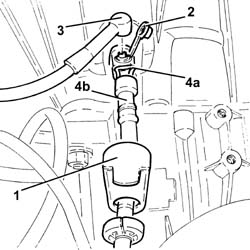
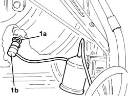
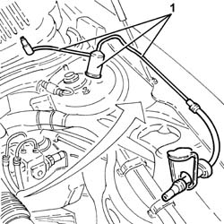
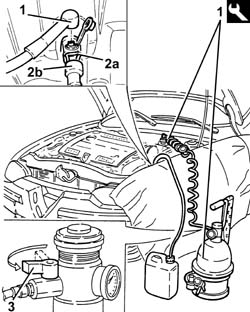

1820B59 Hydraulic clutch circuit vibration DAMPER with inlet and outlet pipes - R.r.
- Path
- Procedures > 18 CLUTCH > 1820 CLUTCH RELEASE CONTROLS > 1820B HYDRAULIC CLUTCH SYSTEM > 1820B59 Hydraulic clutch circuit vibration DAMPER with inlet and outlet pipes - R.r.
- Kind
- repair procedure (removal / refitting; the operation number is the code)
- Applies to
- engines: 2.0 JTS, 2.0 JTS; all production periods
- Interactive page
- https://sloeber94.github.io/elrnDB-a156/en/#/3237906
Applies to: engines: 2.0 JTS, 2.0 JTS; production: da 03/02 a 09/03, da 10/03
 Removing
Removing
 Refitting
RefittingProceed with removal 5530B10 battery - r+r .
Proceed with removal 5530B52 Battery DRIP TRAY/SUPPORT - R.R. .
1. Move the protective cover away.
2. Remove the cap on the bleed valve.
3. Connect the collection system (pipe and reservoir) to the bleed valve on the hydraulic clutch actuator.
4. Lift retaining clip (4a) until the first click is heard and remove pipe (4b) sufficiently to uncover the bleed hole.
Let the hydraulic clutch system drain completely.

Applies to: engines: 2.0 JTS, 2.0 JTS; production: da 03/02 a 09/03, da 10/03
Lift up the clip completely and disconnect the pipe from the hydraulic clutch control actuator.
1. Lift the retaining clip (1a) and disconnect the pipe (1b) from the clutch master cylinder.

Applies to: engines: 2.0 JTS, 2.0 JTS; production: da 03/02 a 09/03, da 10/03
1. Remove the clutch hydraulic circuit vibration damper with the inlet and outlet pipes.

Applies to: engines: 2.0 JTS, 2.0 JTS; production: da 03/02 a 09/03, da 10/03
Refitting
RemovingPlace the clutch hydraulic circuit vibration damper with inlet and outlet pipes back in its housing.
Fit the pipe fully home in its seat on the clutch master cylinder and secure with the retaining clip.
Fit the pipe fully home in its seat on the hydraulic clutch control actuator and secure with the retaining clip.
1. Connect the tool to the brake-clutch fluid reservoir.
 | Name | Country |
|---|---|---|
1 | Brake/clutch bleeding equipment | 1.806.097.001 |
2. Lift retaining clip (2a) until the first click is heard and remove pipe (2b) sufficiently to uncover the bleed hole.
3. Slowly open the fluid reservoir cock.
Wait until the air in the circuit has all come out.

Applies to: engines: 2.0 JTS, 2.0 JTS; production: da 03/02 a 09/03, da 10/03
Fit the pipe fully home in its seat on the hydraulic clutch control actuator and secure with the retaining clip.
Remove the collection system (pipe and reservoir).
Place the cap in its housing on the bleed valve.
Place the protective cover back in its housing.
Remove the bleed equipment.
| Name | Country |
|---|---|---|
- | Brake/clutch bleeding equipment | 1.806.097.001 |
Proceed with refitting 5530B52 Battery DRIP TRAY/SUPPORT - R.R. .
Proceed with refitting 5530B10 battery - r+r .
Check correct clutch disengagement and gear engagement.
Check the fluid level in the brake - clutch reservoir is correct.